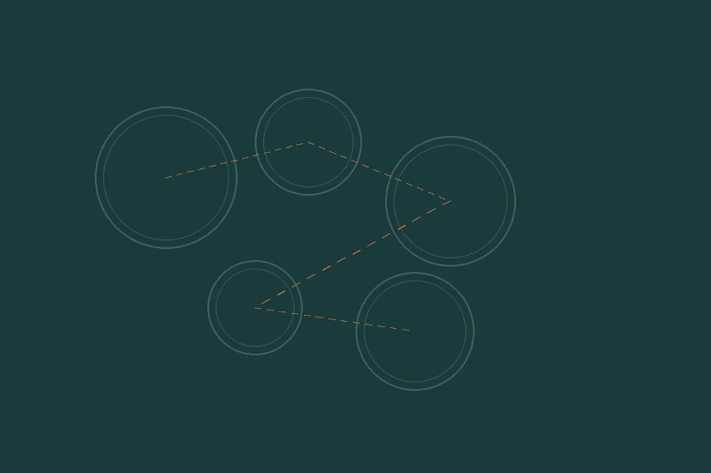

Om meg
Delaktig blikk utenfra
Blogger, kommentarer og artikler – egne og andres – for å dele kunnskap om samskaping og innovasjon.

Foredrag og undervisning
Jeg har undervist og sensurert entreprenørskap ved NMBU, utviklet studier ved UiT, og bygget videreutdanning i samskapende sosial innovasjon. Gjesteunderviser for kommuner, bispedømmeråd og frivillige.
- Larvik – Bakåsveien 16.
- Org.nr – 933 344 150.
- Samskaping – i praksis.
Kunnskap må engasjere
Hvis ikke blir det bare informasjon. Ta kontakt for et foredrag, en prosess eller strategirådgivning.